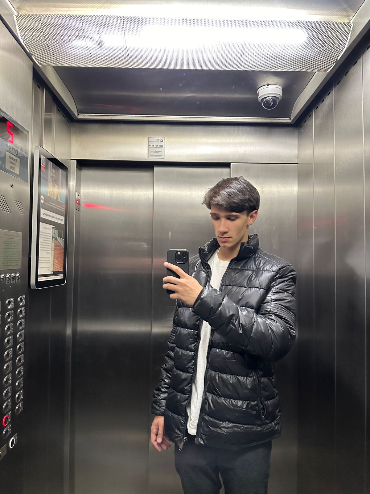

Olá, estamos chegando ao final do ano. Aqui vão algumas atividades de matérias que estudamos ao longo do ano, lembre-se que, para voltar ao ínicio do site e re-escolher a matéria, basta clicar no "Portfólio" ao canto superior esquerdo das páginas! Boa leitura.

Bom, eu sou o Thomaz Araújo Gomez tenho 17 anos e cursei os 3 anos do meu ensino médio no Senac Nações Unidas. Foram anos muito legais porêm bem díficeis para mim, pois assim como muitos outros alunos, vim de uma escola tradicional. Após a minha adaptação, correu tudo certo, acabei escolhendo a carreira técnica em Técnologia da Informção, visando um bom futuro no mercado de trabalho. Depois de tudo isso, chegou a hora de mostrar minhas atividades preferidas desse ano, para navegar entre as matérias, use a navbar que sempre vai estar na parte superior de todas as páginas.